YOSHI + MOSHI / FILMS
FILMS
Big heads, big ideas and short films
Big heads, bigger ideas and a flair for drama. Yoshi + Moshi turn their wildest ambitions into films, without saying a word but with plenty to tell.

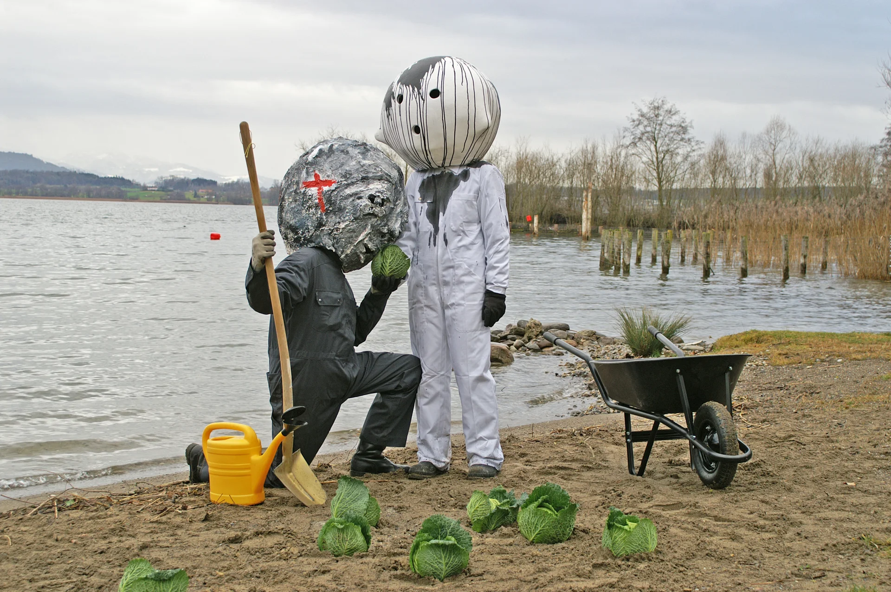
Chou de Voltaire, Zug (CH)
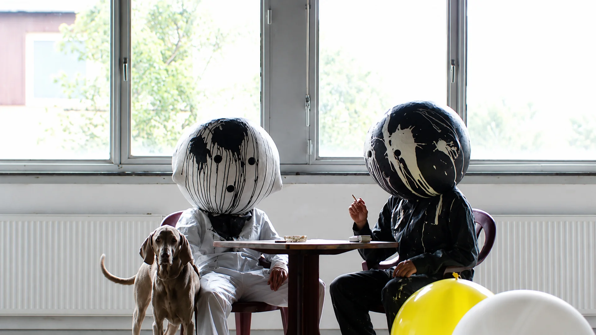
Culture Clash, Berlin (GER)
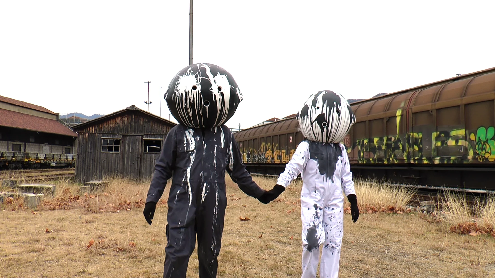
Enigma Code, Chiasso (CH)
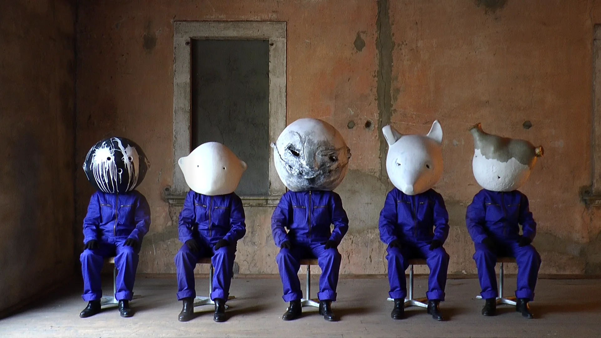
EXIT RIGHT, Ligornetto (CH)
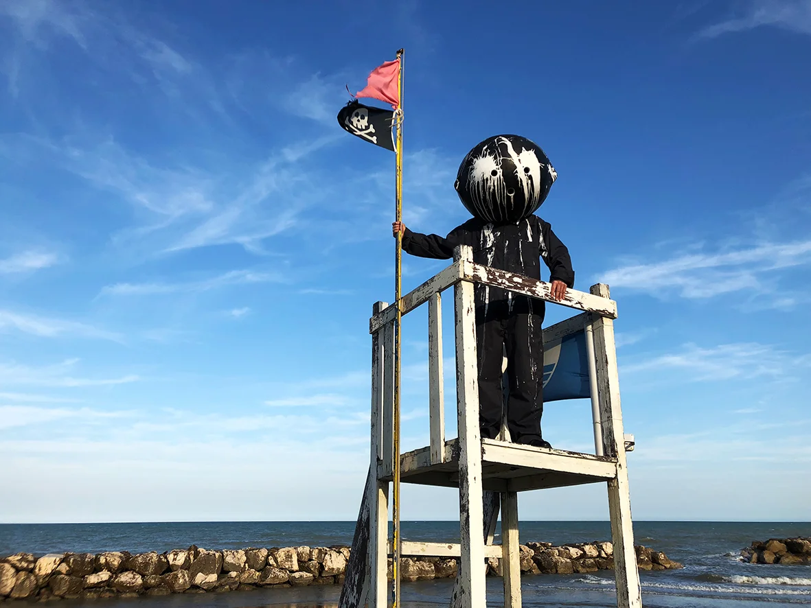
FACE YOSHI, Fano (IT)
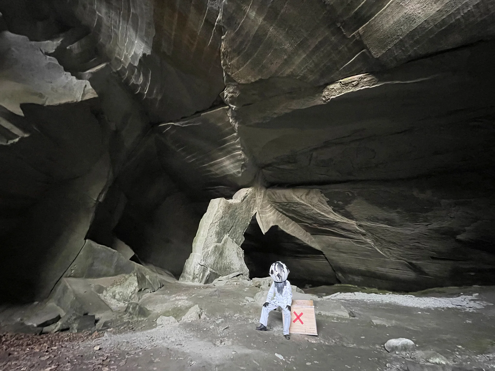
Háblame, Buenos Aires (ARG) Homeless, Hossegor (FR)
Homeless, Hossegor (FR)
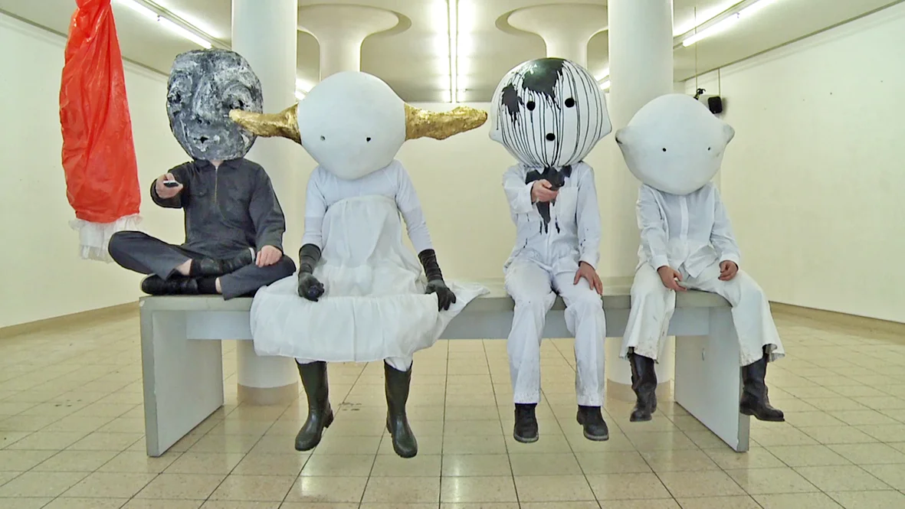
Last Suppe, Zug (CH)
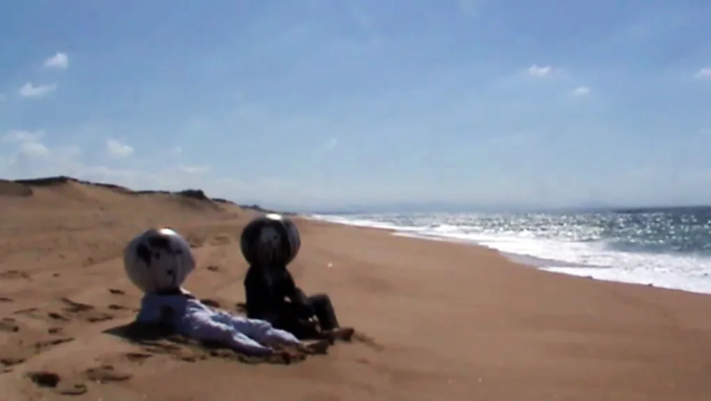
LOST LOST, Labenne (FR)
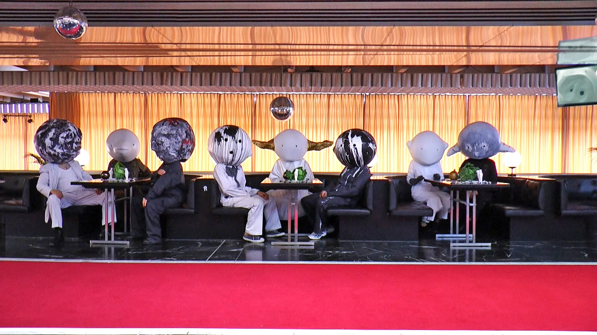
Occupy ORF – A feast for Yoshi + Moshi, ORF III, Vienna (AT)
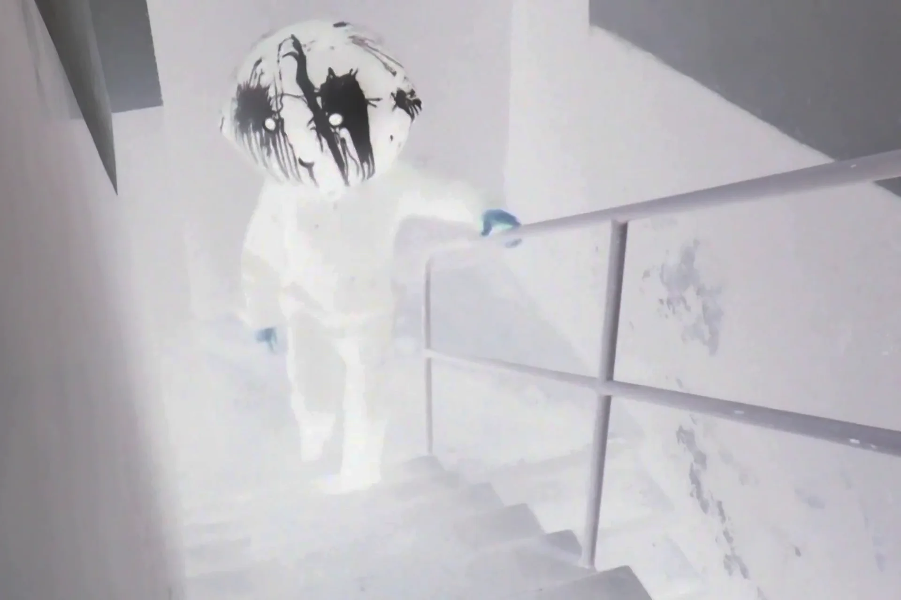
THE TOWER, Ligornetto (CH)
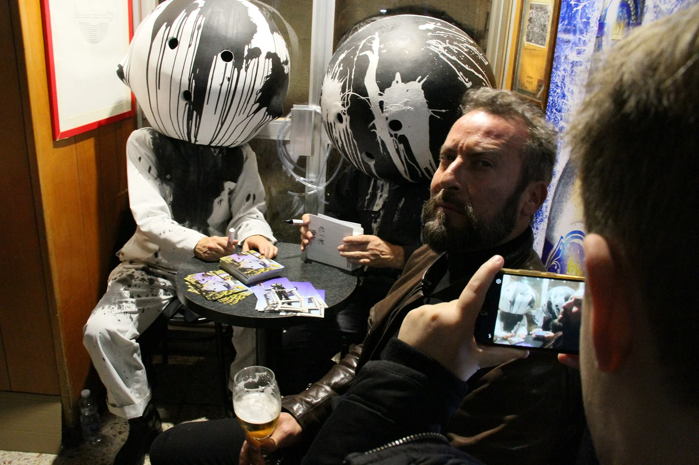
YOSHI + MOSHI – Movie World Tour, Genoa (IT)